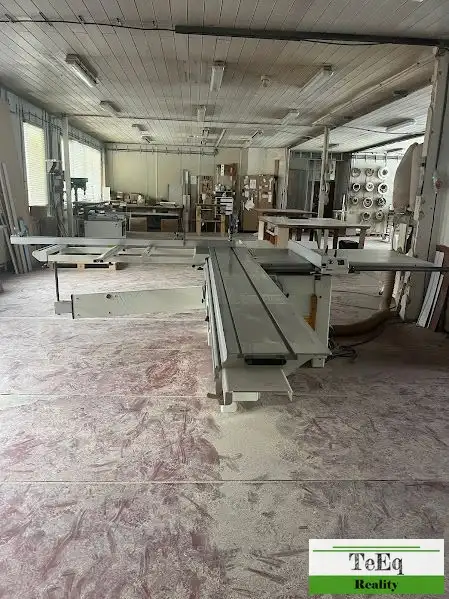
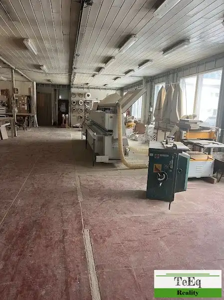
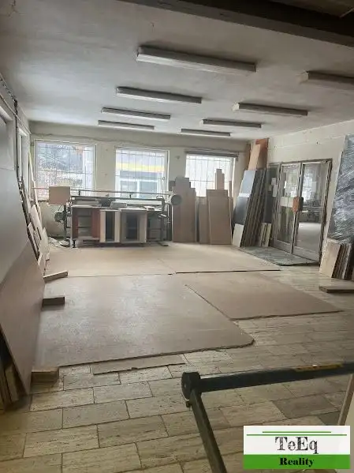
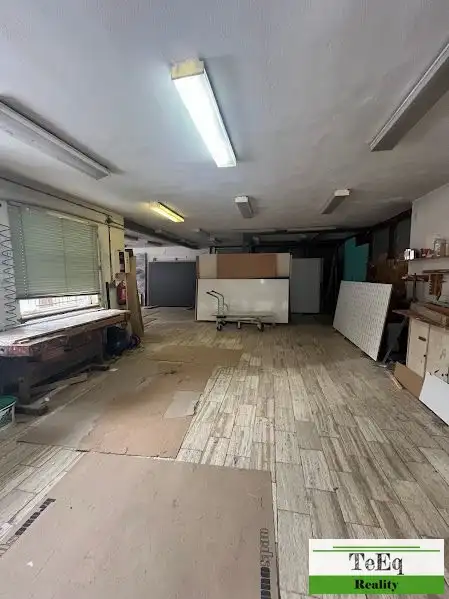
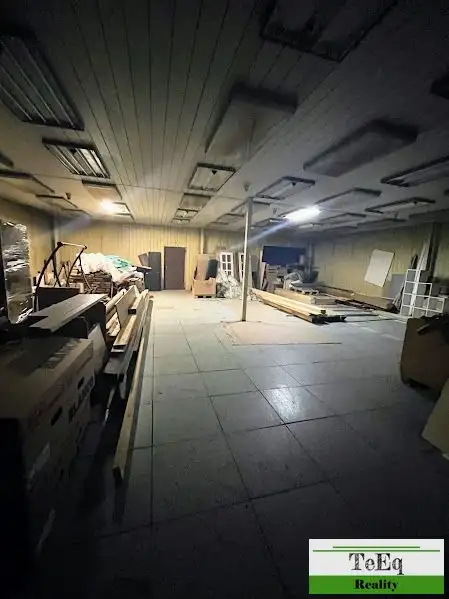
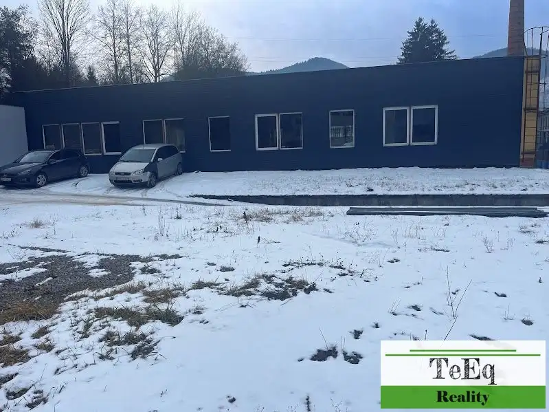
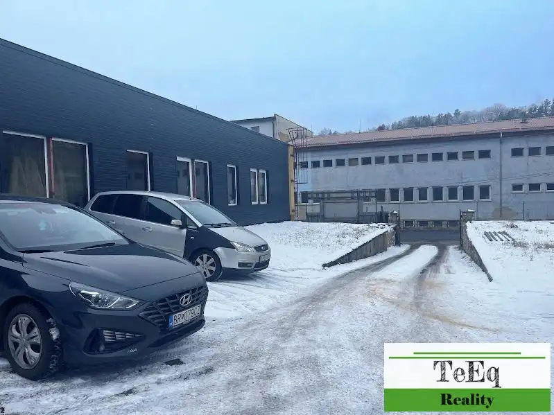
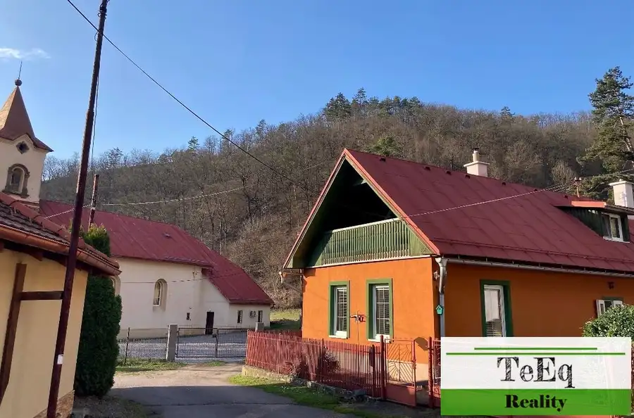
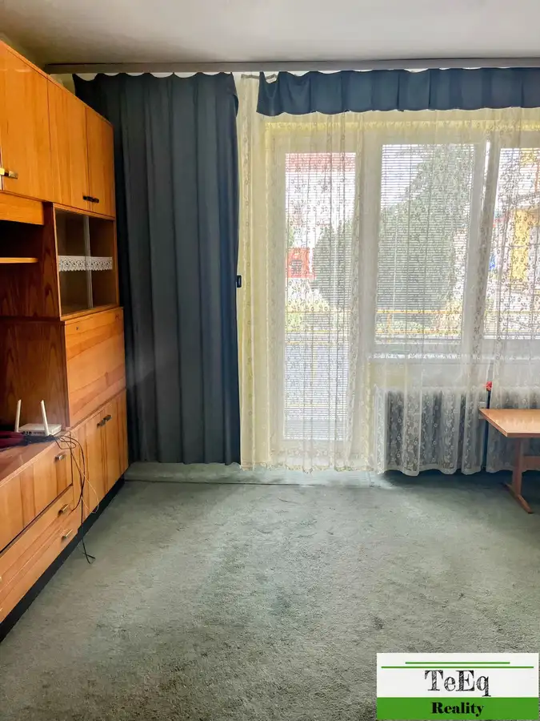
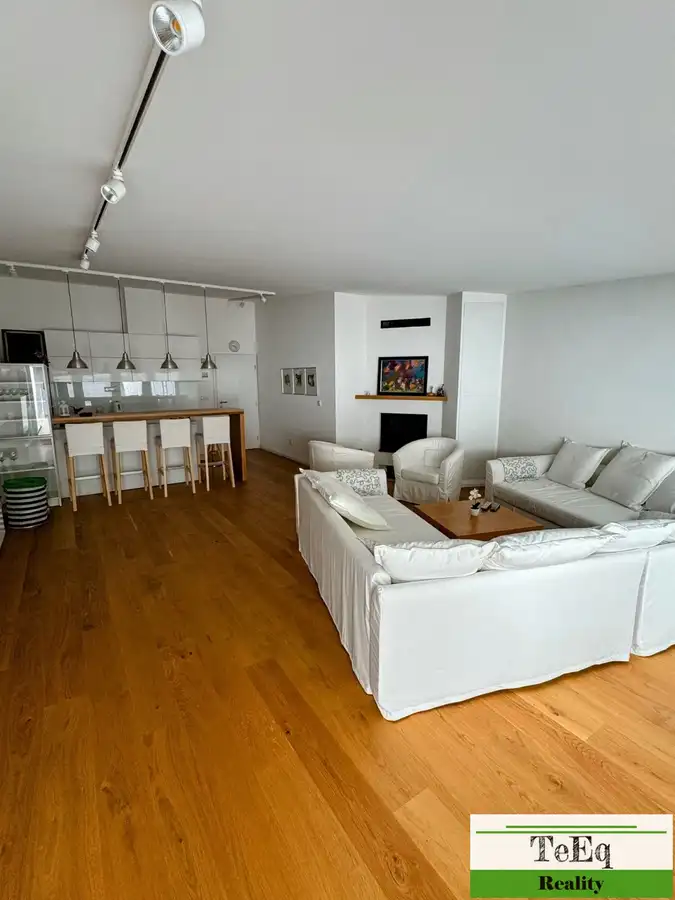

Prenájom · Komerčné priestory
Prenájom haly v obci Valaská - Piesok.
Valaská
Cena na vyžádání







- Plocha759 m²
- StavČiastočná rekonštrukcia
- VlastníctvoFiremné
O nehnuteľnosti
V TeEq Reality na prenájom v zastúpení majiteľa haly 32 m x 13,20 m a 25 m x 12,70 m s kompletnou vybavenosťou pre zamestnancov výroby a kancelárie 191m2. Pracovná výška v halách 300 cm, výška budovy je 444 cm. Pozemok veľký priestranný o rozlohe spolu 4397 m2, z toho stavby 891 m2. Prístup z asfaltovej cesty, možnosť vstupu z dvoch strán, aj kamión sa vie otočiť na dvore.Objekt vhodný pre výrobnú spoločnosť, obchodnú spoločnosť, veľkosklad.Prenajíma sa ako celok, prípadne časť objektu, podľa dohody.Viac informácii: Realitný konzultant Lýdia Oslancová RSc. 0907320577, mail: lydia.oslancova@teeq.sk
Parametre
- Druh
- Skladový objekt
- Dátum zverejnenia
- 28. 01. 2025
- Elektrina
- Na pozemku - 230 V, Na pozemku - 400 V
- Energetický certifikát budovy
- nie je
- Odpadové vody
- Na pozemku - Kanalizácia
- Plocha pozemku
- 4397 m²
- Plyn
- Nedostupné
- Počet nadzemných podlaží
- 1
- Prístupová komunikácia
- Asfaltová
- Rok výstavby
- 1984
- Stav nehnuteľnosti
- Čiastočná rekonštrukcia
- Typ
- Prenájom
- Typ konštrukcie
- Zmiešaná
- Vlastníctvo
- Firemné
- Voda
- Na pozemku - Diaľkový vodovod
- Vybavenie objektu
- Holopriestor
- Vykurovanie
- Ústredné
- Zastavaná plocha
- 891 m²
- Úžitková plocha
- 759 m²
Kde to je


Ďalšie ponuky
Celá ponukaMohlo by Vás zaujímať

DomNové 152 000 €Predaj domu v obci Hodruša Hámre. Hodruša-Hámre 147 m²
BytNové 98 000 €Predaj 3 izbového bytu v centre mesta Žiar nad Hronom. Žiar nad Hronom 3-izbový68 m²1. podlažie
DomNové 449 000 €Predaj domu s vkusnou nadstavbou v centre mesta B. Štiavnica Banská Štiavnica 250 m²